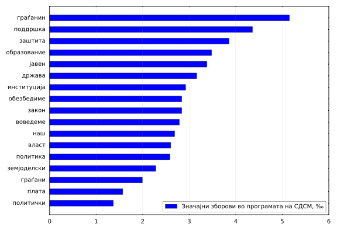
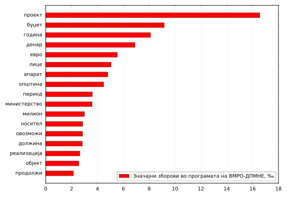
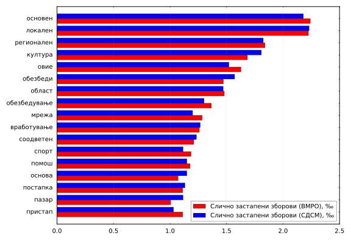

Интересно е да се направи и лексичка анализа на програмите на двете најголеми партии во Македонија. При таква анализа, најлесно е да се почне со големината и диверзитетот на вокабуларот (речникот) на зборови во двете програми.
| СДСМ | ВМРО-ДПМНЕ | ||||
|---|---|---|---|---|---|
| Употребени зборови* | 9484 | 14922 | |||
| Вкупно зборови | 59178 | 122276 | |||
| Лексичка густина | 16% | 12.2% |
• Бројот на употребени зборови во еден текст е познат и како лексичка разновидност. Лексичка густина, од друга страна, е колку често во просек зборовите се наоѓаат во текстот. Притоа не се земени во предвид честите зборови во македонскиот јазик (stopwords), а изменетите зборови се нормализирани кон основната форма (луѓе -> човек, мое -> мој, овозможиме -> овозможи).
Главната споредбена анализа се состои во споредба на честотата на зборовите. На следните графици се издвоени зборовите кои значително повеќе се наоѓаат во програмата на едната партија, споредбено со партијата на другата.
 
На пример, зборот „граѓанин“ во програмата на СДСМ се појавува со честота од 5.15‰, наспроти програмата на ВМРО-ДПМНЕ каде што се појавува со честота од 1.97‰. Слично во обратниот случај, зборот „проект“ во програмата на ВМРО-ДПМНЕ се појавува со честота од 16.56‰, додека во програмата на СДСМ честотата е само 4.02‰. Ова не значи дека ова се најчестите зборови во програмите, ниту дека овие зборови се ретки во другата програма, туку само дека разликата во честота е најголема кај нив.
Од друга страна, може да се разгледаат и зборовите кои имаат приближно еднаква честота во двете програми:

Притоа, овде се прикажани зборови со поголема честота од 1.1‰. Најблиска честота има зборот „локален“ - 2.23‰.
Понатаму, интересно е да се направи и анализа на колокациите во двете програми. Колокација е група од два збора кои се наоѓаат еден до друг и се среќаваат заедно многу често во даден текст.
| СДСМ | ВМРО-ДПМНЕ | |||||
|---|---|---|---|---|---|---|
| 1 | република македонија | 158 | република македонија | 486 | ||
| 2 | работни места | 56 | милиони евра | 253 | ||
| 3 | финансиска поддршка | 52 | наредниот период | 157 | ||
| 4 | милиони евра | 48 | населено место | 116 | ||
| 5 | регионален пат | 46 | регионалниот пат | 112 | ||
| 6 | населени места | 42 | вкупен износ | 103 | ||
| 7 | животната средина | 38 | медицински апарат | 100 | ||
| 8 | здравствена заштита | 37 | работни места | 99 | ||
| 9 | локалната самоуправа | 35 | милиони денари | 95 | ||
| 10 | земјоделски производи | 34 | здравствен дом | 90 | ||
| 11 | индустриска зона | 30 | животната средина | 75 | ||
| 12 | нашиот план | 29 | локален пат | 69 | ||
| 13 | средната класа | 28 | средните училишта | 60 | ||
| 14 | човековите права | 28 | општа болница | 60 | ||
| 15 | средни претпријатија | 28 | електрична енергија | 58 | ||
| 16 | социјална заштита | 27 | ново село | 57 |
Овде треба да се забележи дека се вклучени сите комбинации од сите форми на колокациите, а е прикажана најчестата. Најчесто споменувана колокација, без изненадување, и во двете програми е „Република Македонија“, а потоа следи и „милиони евра“ поради сумите во двете програми. Други колокации кои често се среќаваат и во двете програми се „регионален пат“, „работни места“ и „животна средина“.
Сите податоци од анализата се отворени за користење.